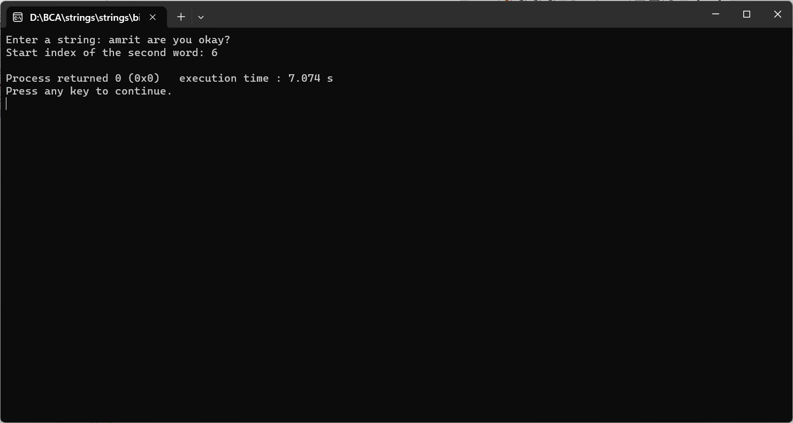

ENTER THE STRING FROM USER AND SPLITS THE FIRST WORD AND SECOND WORD AND RETURN THE START INDEX OF THE SECOND WORD
#include
#include
#include
int getSecondWordStartIndex(const char *str) {
int i = 0;
int wordCount = 0;
int secondWordStartIndex = -1;
while (str[i] != '\0') {
// Skip spaces at the start of the string
while (isspace(str[i])) {
i++;
}
if (str[i] != '\0') {
if (wordCount == 1 && secondWordStartIndex == -1) {
secondWordStartIndex = i;
}
// Move to the end of the word
while (str[i] != '\0' && !isspace(str[i])) {
i++;
}
if (str[i] != '\0') {
wordCount++;
}
}
}
return secondWordStartIndex;
}
int main() {
char inputString[1000];
printf("Enter a string: ");
fgets(inputString, sizeof(inputString), stdin);
int startIndexSecondWord = getSecondWordStartIndex(inputString);
if (startIndexSecondWord != -1) {
printf("Start index of the second word: %d\n", startIndexSecondWord);
} else {
printf("Second word not found or no second word exists.\n");
}
return 0;
}
